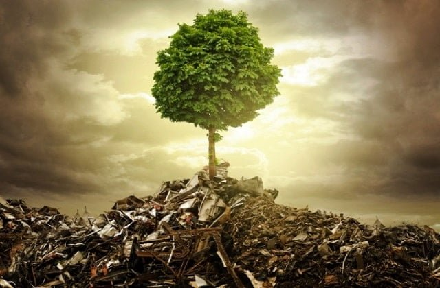

QUÉ ES LA CONTAMINACIÓN DEL SUELO
Este mal invisible aparece cuando la concentración de contaminantes en la superficie es tan alta que daña la biodiversidad del suelo y pone en riesgo nuestra salud a través, sobre todo, de la alimentación. Precisamente actividades como la ganadería y la agricultura intensivas suelen emplear fármacos, plaguicidas y fertilizantes que contaminan los campos, al igual que ocurre con los metales pesados y otras sustancias químicas de origen natural o antropogénico.
La contaminación del suelo es una amenaza global especialmente grave en regiones como Europa, Eurasia, Asia y África del Norte, como revela la Organización de las Naciones Unidas para la Alimentación y la Agricultura (FAO). Este organismo internacional asegura también que la degradación intensa o moderada afecta ya a un tercio del suelo mundial, y su recuperación es tan lenta que se necesitarían 1.000 años para crear 1 centímetro de capa arable superficial.